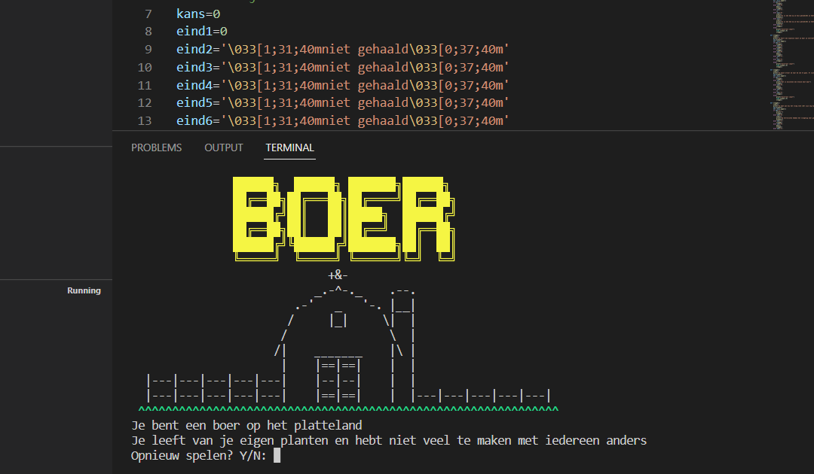
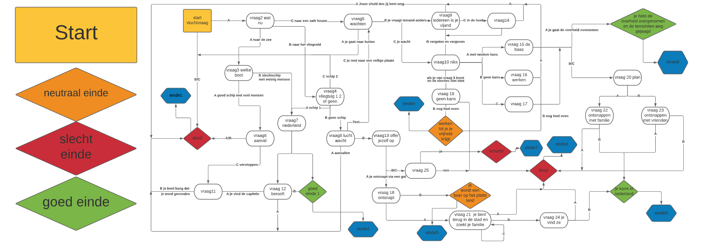

HELLO YOU
The Project
In this project I was tasked to make a Python game about refugees trying te escape there country. The first thing i made was a flow chart of the story you can see the results below but they are in Dutch.  As it was my first coding project I started coding by making a lot of if statements. But after finding out that that would be very hard and time consuming I found out there were functions in python. Using my knolage of python I made 3 inputs A B and C and that would trigger different functions. Then in the end I made the game loopable and added a start menu and added art to all the endings.